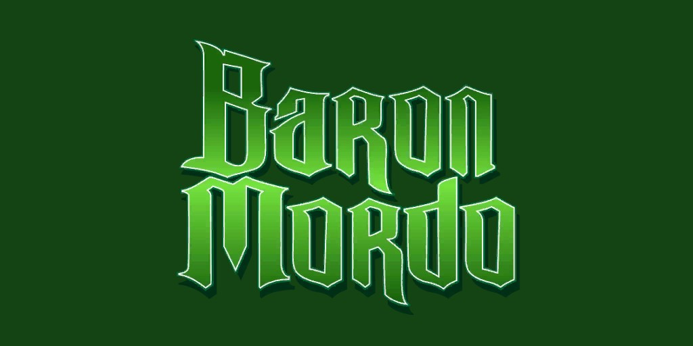
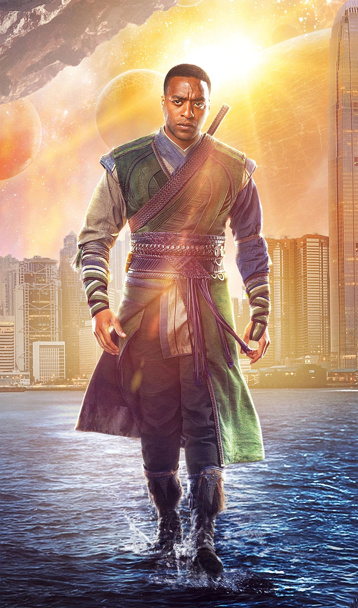
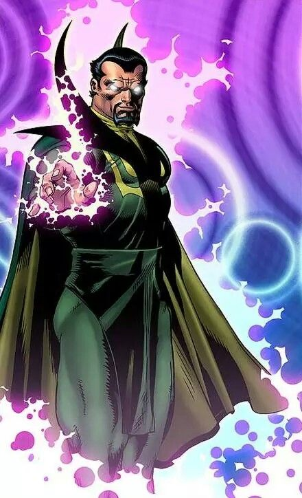
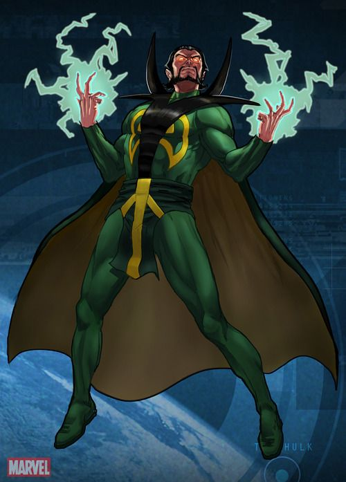
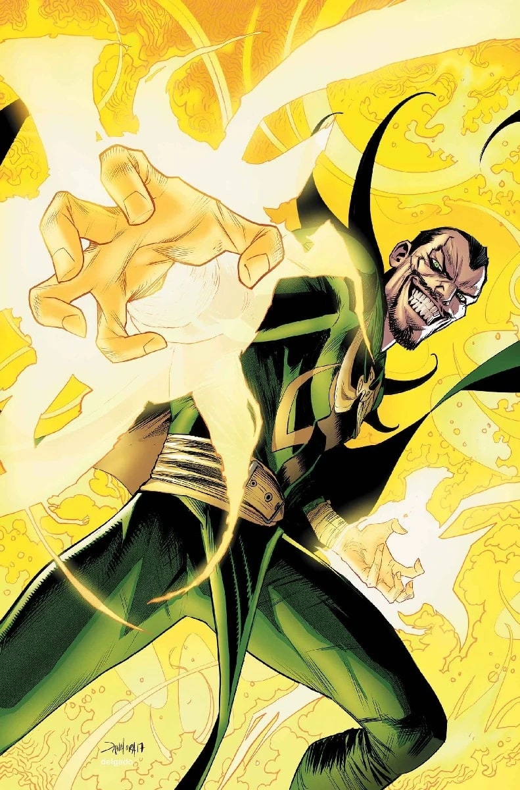
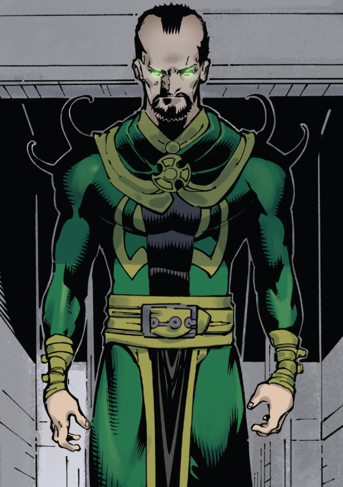
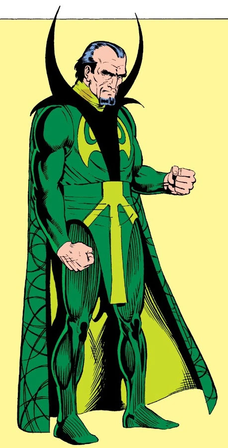
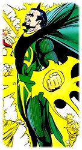

Le Baron Mordo (Karl Mordo) (Terre-616)

Origines :
Nikolaï Mordo, aristocrate transylvain, est devenu Baron quand ses terres tombèrent sous le joug de l’Empire austro-hongrois, peu avant la Première Guerre mondiale.
Marqué par la défaite de l’Empire à la fin de la guerre et opposé à la technologie moderne, Nikolaï veut redorer le blason de la Transylvanie par le biais de la magie noire.
Il avait été initié aux arts mystiques par sa maîtresse de l’époque, Miarka, Reine-Sorcière des Roms.
Il aura avec elle une fille illégitime, Lilia.
Le Vicomte allemand Heinrich Krowler a besoin d’un petit-fils afin de réaliser ses projets mystiques.
Il arrange alors l’union de sa fille, Sara, avec Nikolaï.
Ils auront un fils, Karl Amadeus, en 1921.
Le Vicomte Krowler ordonnera plus tard à sa fille d’assassiner Nikolaï, ce qu’elle fit avec plaisir.
Elle quitte ensuite Varf Mandra avec son fils et vécut dès lors dans le château de son père.
Un jour, le jeune Mordo surprend une conversation entre sa mère et son grand-père au sujet du meurtre de son père.
Il jure alors de se venger et de mener à bien les projets de son père, et bien plus encore, sous le nom de Baron Mordo.
Karl débute son apprentissage de la magie noire avec son grand-père, le Vicomte Krowler.
Ce dernier participe par ailleurs à la montée au pouvoir d'Adolf Hitler.
En 1939, Karl, alors âgé de 18 ans, est envoyé par Heinrich Krowler au Tibet pour y recevoir l'enseignement de l’Ancien, Sorcier suprême de la Terre.
Mais Krowler lui a secrètement inséré un sort de transfert pour que toute la magie apprise par Karl devienne également la sienne.
L’Ancien sent le fort potentiel de Mordo mais également le mal qui est en lui.
Il accepte cependant le jeune homme comme disciple, notamment pour refréner ses ambitions néfastes.
L'Ancien sait que son successeur sera Stephen Strange, mais ce dernier n'est alors à ce moment qu'un enfant.
Mordo est fortement jaloux de l'illustre destinée de Strange.
Il passe alors beaucoup de temps à le tourmenter dans ses rêves durant toute sa jeunesse.
Par ailleurs, le lien avec Krowler lui permet de découvrir l’existence de Dormammu.
De nombreuses années après, Stephen Strange est devenu un chirurgien arrogant et mène une vie dissolue.
Après un accident lui ayant fait perdre l'usage de ses mains, il se rend au sanctuaire de l’Ancien à Kamar-Taj.
Mordo voit ainsi arriver son rival prédestiné.
Il lance alors une attaque mystique secrète contre l’Ancien, qui en sort considérablement affaibli.
Strange découvre ses sombres desseins et propose à l’Ancien de devenir son disciple, comme sa destinée le laissait présager.
Mordo restera quelque temps à étudier avant de partir, pour amasser un pouvoir pour ensuite revenir tuer les deux hommes.
De retour dans son pays natal, Mordo prépare sa vengeance.
Il découvre le Livre de Cagliostro, un grimoire contenant de vastes connaissances magiques, notamment pour maîtriser le Voyage dans le temps.
Il l'utilise alors pour affronter Docteur Strange.
Mordo est prêt à tout pour le vaincre.
Il se fait notamment passer pour Clive Bentley et piège Strange dans des vapeurs paralysantes, mais est stoppé à temps par la fille de Bentley, Victoria.
Suite à cet échec, Mordo devient le laquais de Dormammu, qui cherche lui aussi à se venger du Docteur Strange, et ses pouvoirs sont accrus par son employeur.
Il viole le sanctuaire de l’Ancien et parviendra presque à le tuer, mais Strange se précipite pour sauver son mentor et le mettre en sécurité.
Mordo recrute plusieurs sorciers à travers la planète et poursuit le sorcier aux quatre coins du monde.
Le Baron Mordo finit par capturer l’Ancien et attire Strange dans la Dimension Noire, le domaine de Dormammu.
Mordo attaque son éternel rival dans le dos, ce qui va à l'encontre de l'honneur selon Dormammu.
Ce dernier le bannit donc dans une autre dimension.
Plus tard, Strange libère par inadvertance Mordo, et le laisse aux mains de l’Ancien.
Mordo parviendra cependant à s’échapper.






Capacités :
Mordo est l'un des plus puissants sorciers de la Terre.
Il tire son pouvoir de trois sources principales :
Il peut manipuler et projeter de l'énergie ou des illusions, transformer la matière, animer des objets, se téléporter.
Il est également doué en magnétisme animal.
Il peut prendre possession des esprits, notamment par projection de pensées.
Il est aussi capable de dissocier son esprit de son corps, et voyager vers d'autres dimensions ou d'autres époques.

Apparence :
Le Baron Mordo est souvent représenté portant une grande tunique verte avec une cape, remontant sous forme de « piques » à ses épaules.